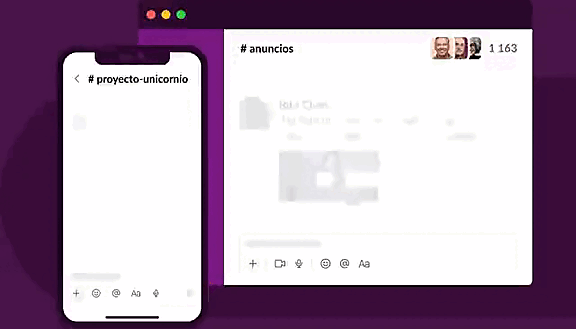

Un buen trabajo en equipo comienza con una sede digital
Reunir a todos tus compañeros, herramientas y comunicación en un mismo lugar te permitirá trabajar de manera más rápida y eficiente que nunca.

EMPRESAS DE TODO EL MUNDO YA CONFÍAN EN SLACK

Reúne a tu equipo
Conectar tus otras aplicaciones de trabajo con Slack te permite ahorrar tiempo al no tener que cambiar entre pestañas. Además, con herramientas eficaces como el Creador de flujos de trabajo, puedes automatizar tareas rutinarias.

Selecciona cómo quieres trabajar
Slack te otorga la flexibilidad para trabajar cuando, donde y como tú quieras. Puedes chatear, enviar clips de audio y vídeo o unirte a una junta para discutir asuntos en directo.

Agiliza el trabajo con todas tus herramientas en un mismo lugar
Conectar tus otras aplicaciones de trabajo con Slack te permite ahorrar tiempo al no tener que cambiar entre pestañas. Además, con herramientas eficaces como el Creador de flujos de trabajo, puedes automatizar tareas rutinarias.
Equipos grandes y pequeños confían en Slack
Slack se adapta de forma segura para garantizar la colaboración en las empresas más importantes del mundo.
85%
de usuarios afirma que Slack ha mejorado la comunicación*
86%
creen que su capacidad para trabajar a distancia ha mejorado*
88%
se sienten más conectados con sus equipos*

“Hemos podido crear una amplia red virtual de empleados que se pueden comunicar como si estuvieran juntos. Hubo bastantes problemas sobre dónde trabajábamos, pero no sobre el cómo”.
Mark Smith
Responsable técnico sénior de Productos, T-Mobile